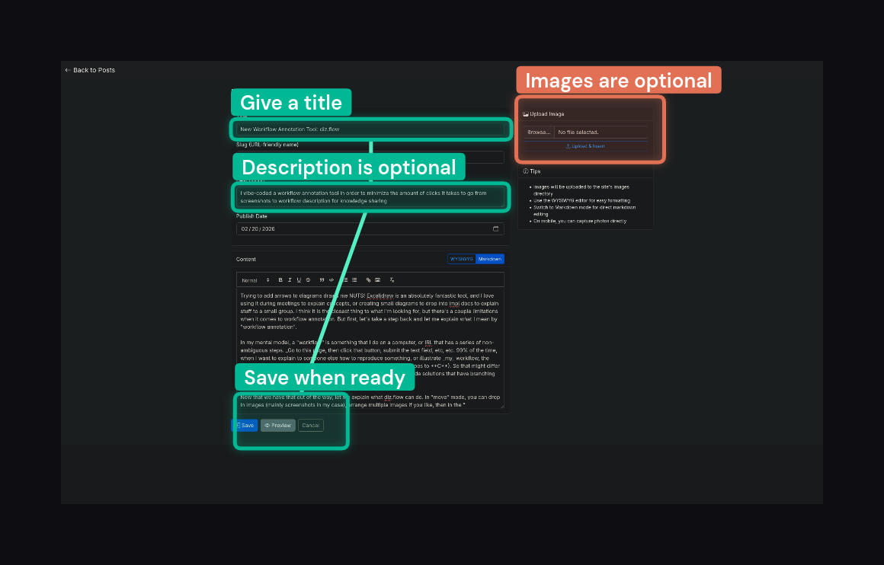

Published 2026-02-20
Introducing diz.flow!
I made this in an afternoon this weekend using Claude Code, mostly from my phone. It solves a very specific problem, that might only irk me.
Trying to add arrows to diagrams drives me NUTS! Excalidraw is an absolutely fantastic tool, and I love using it during meetings to explain concepts, or creating small diagrams to drop into impl docs to explain stuff to a small group. I think it is the closest thing to what I'm looking for, but there's a couple limitations when it comes to workflow annotation. For one, I'm not aware of any way to automatically connect to boxes together with a directional arrow. And second, adding text to a box in Excalidraw requires extra clicks with my mouse. I'm deathly allergic to extra clicks.
I'm on Mac (most of the time), and they have some handy default annotation tools. But let's be real, Apple isn't known for making decent tools for their power users. Their markup tools are way too one side fits all. I need something ridiculously opinionated, and ridiculously fast. And I want my arrows to SNAP to the boxes!
Before continuing, let's take a step back and let me explain what I mean by "workflow annotation".
In my mental model, a "workflow" is something that I do on a computer, or IRL that has a series of non-ambiguous steps. Go to this page, then click that button, submit the text field, etc, etc. 99% of the time, when I want to explain to someone else how to reproduce something, or illustrate my workflow, the workflow is strictly sequential (A always goes to B always goes to C). So that might differ from the mental model of a "workflow" to someone familiar with no-code solutions that have branching actions. Just know for this purpose, all workflows are sequential!
Now that we have that out of the way, let me explain what diz.flow can do. In "move" mode, you can drop in images (mainly screenshots in my case), arrange multiple images if you like, then in the "draw" mode, you add sequential annotations by click-and-dragging bounding boxes, then providing an optional text blurb and hitting ENTER. When you are done, hit ESC, and you will exit the "flow". If you need to add multiple flows in one view, you can immediately start making more bounding boxes and it will automatically create another flow in a different color. Each bounding box in the flow is connect using a directional arrow.

That's it! It saves me SECONDS every time I want to create one of these annotated screenshots. Not much really, but I've already noticed, that the "annoyance" barrier to quickly creating something like this to share with someone has dropped low enough where I'm making them all the time already.